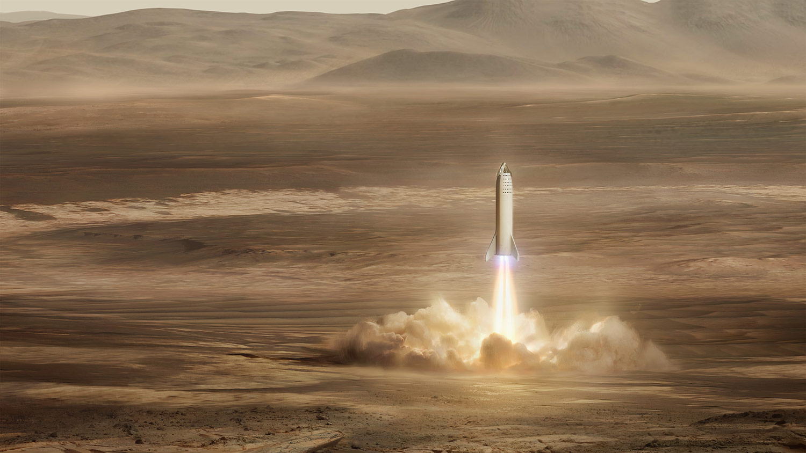
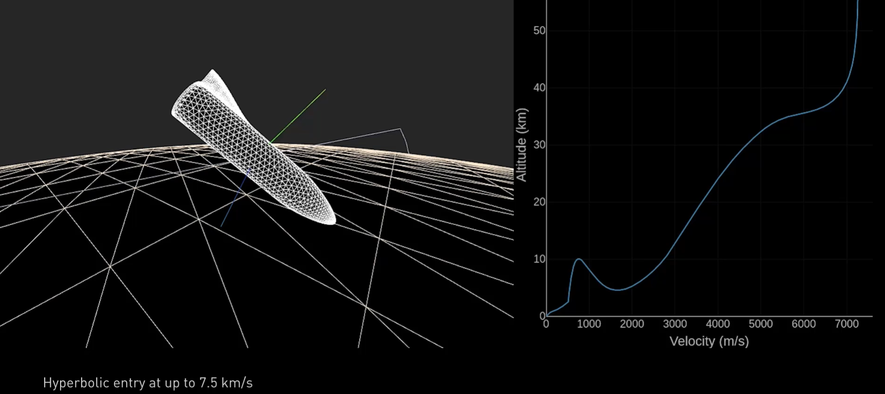

“You want to wake up in the morning and think the future is going to be great - and that's what being a spacefaring civilization is all about. It's about believing in the future and thinking that the future will be better than the past. And I can't think of anything more exciting than going out there and being among the stars.”
— ELON MUSK, SPACEX
Our aspirational goal is to send our first cargo mission to Mars in 2022. The objectives for the first mission will be to confirm water resources, identify hazards, and put in place initial power, mining, and life support infrastructure. A second mission, with both cargo and crew, is targeted for 2024, with primary objectives of building a propellant depot and preparing for future crew flights. The ships from these initial missions will also serve as the beginnings of the first Mars base, from which we can build a thriving city and eventually a self-sustaining civilization on Mars.
Starship will enter the Mars atmosphere at 7.5 kilometers per second and decelerate aerodynamically. The vehicle’s heat shield is designed to withstand multiple entries, but given that the vehicle is coming into the Mars atmosphere so hot, we still expect to see some ablation of the heat shield (similar to wear and tear on a brake pad).
